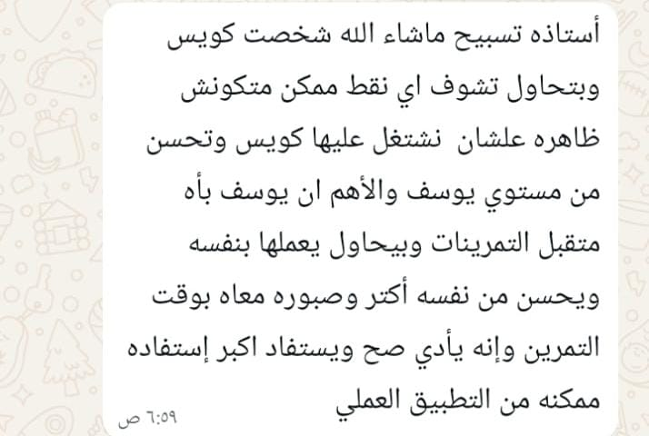
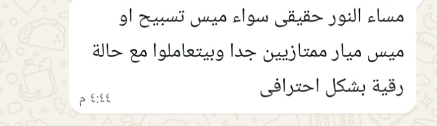
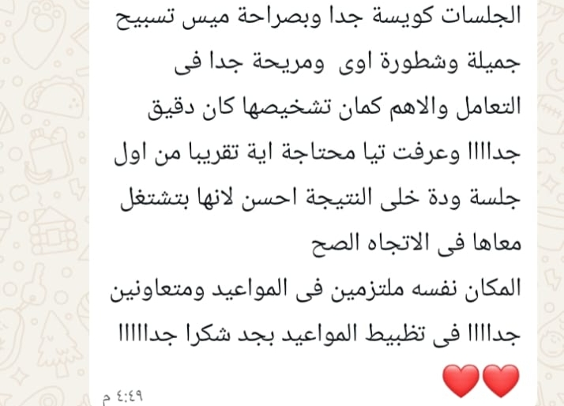

The First Academy
مركز رعاية وتأهيل الأطفال والمراهقين
مين احنا
خدماتنا
وحداتنا
الفروع
تواصل معنا
احجز استشارة
الرجوع لوحدة التنظيم العصبي
💛 ثقة أهالينا
آراء الأهالي
فرست للتنظيم العصبي



تواصل معانا بخصوص فرست للتنظيم العصبي
تواصل معانا على الواتساب
01008235911